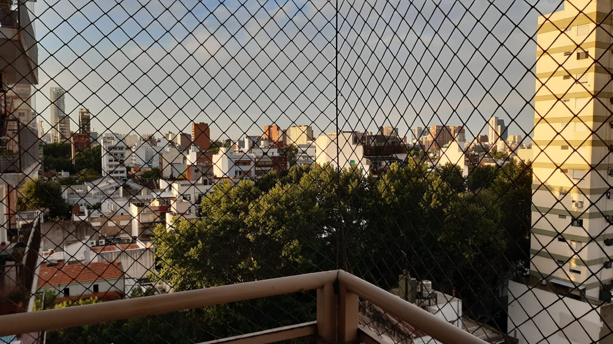

Nuñez
La zona tiene abundantes edificios de gran tamaño con departamentos y una alta actividad comercial, especialmente en la Avenida Cabildo y la Avenida del Libertador.
Existen dos plazas principales: Plaza Balcarce y Plaza Félix Lima (Con juegos y cancha de básquet). Entre la Avenida del Libertador y la orilla del río, hay grandes áreas al aire libre, donde existen clubes deportivos.
